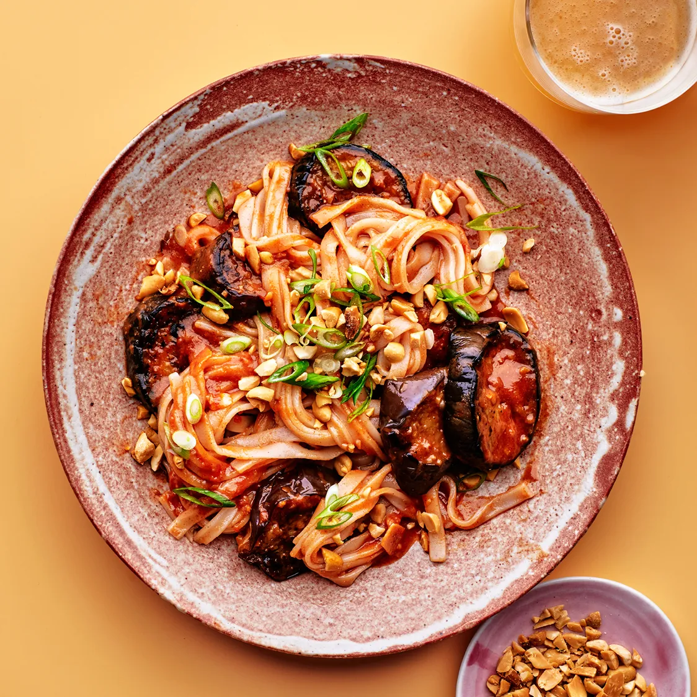

Spicy Braised Eggplant Noodles

This weeknight noodle dish uses gochujang, miso, and tomato paste
for deep flavor in no time. Long, slender Japanese and Chinese
eggplant cook faster and got more tender than their globe-shaped
cousins.
Ingredients:
- kosher salt
- 12 oz. dried wide rice noodles
- 3 Tbsp. gochujang (Korean hot pepper paste)
- 1 Tbsp. white or yellow miso
- 6 Tbsp. extra-virgin olive oil, divided
- 1 1/2 lb. medium eggplant, preferably Japanese, sliced 3/4" thick
- 6 garlic cloves, thinly sliced
- 1" piece ginger, peeled, finely chopped
- 2 Tbsp. double-concentrated tomato paste
- 2 Tbsp. unsalted butter
- 3 scallions, thinly sliced
- 1/4 cup chopped salted dry-roasted peanuts
Preparation:
- Noodles:
- Bring a large pot of lightly salted water to a simmer.
- Remove pot from heat and stir in noodles.
- Let soak, stirring often, until very al dente.
- Drain, reserving 1 cup noodle cooking liquid
- Rinse noodles under cold running water
- Sauce:
- Mix gochujang and miso in a small bowl.
- Gradually add 1 1/2 cups warm water, stirring until smooth.
Cooking:
- Eggplant:
- Heat 3 Tbsp. oil in a large skillet, preferably nonstick, over
medium-high heat.
- Add eggplant
- Drizzle with 2 Tbsp. of oil.
- Season lightly with salt.
- Cook, undisturbed, until golden brown.
- Toss
- Continue to cook, tossing occasionally, until most
of the eggplant are golden and nearly tender, about
5 minutes more.
- Transfer eggplant to a plate.
- Sauce:
- On the same skillet reduce heat to medium.
- Add remaining 1 Tbsp. oil to skillet.
- Cook garlic and ginger
- Stir often until golden brown, about 2 minutes.
- Add tomato paste and cook.
- stir until slightly darkened, about 1 minute
- Stir in gochujang mixture.
- Finishing:
- Return eggplants to skillet.
- Cook
- Stir ocassionaly until eggplant are nearly
falling apart.
- Add noodles, butter and 1/2 cup reserved noodle
cooking liquid to skillet.
- Cook.
- Toss often
- Add cooking liquid as needed until sauce is glossy,
about 2 minutes.
- Season with salt.
- Serve noodles topped with scallions and peanuts.